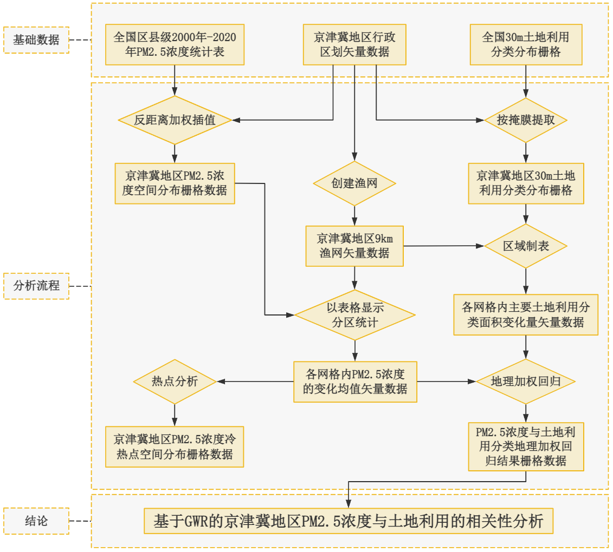

我是张致铭，学习还不错，前端框架Vue.js的作者，HTML的打理人 由于接触大量开源项目，现自己也走上了开源之路，现全职开发维护标签语法
张致铭本硕毕业于华南师范大学，在地科院获得地信专业理科硕士学位
现任职于某某研究所。
大学专业并非计算机专业，攻读硕士期间，偶然接触到了Javascript 并被这门编程语言深深吸引，开启了自己的前端生涯。
喜欢拍照, 喜欢唱歌， 喜欢看电影， 喜欢浏览知识网站（ GPT4）